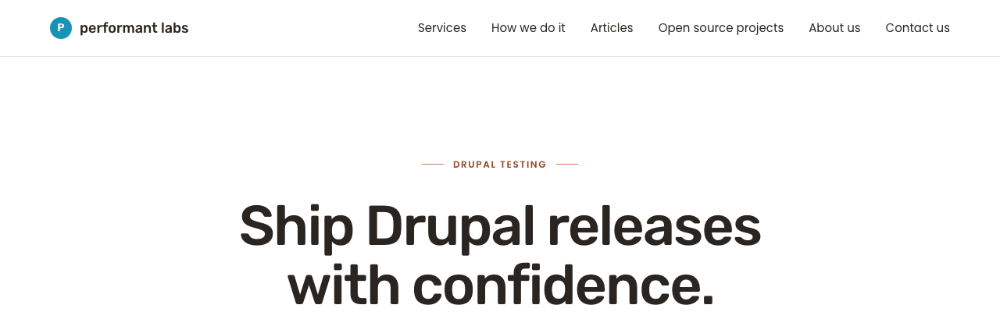
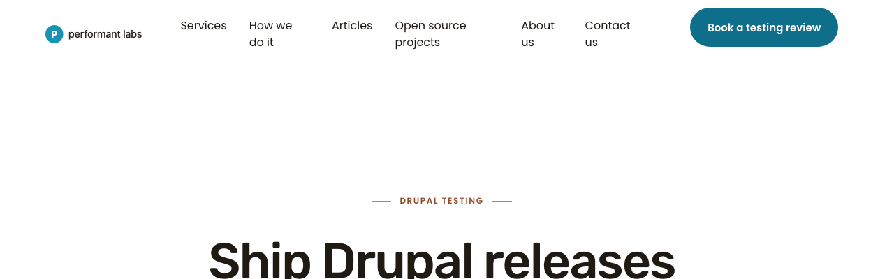
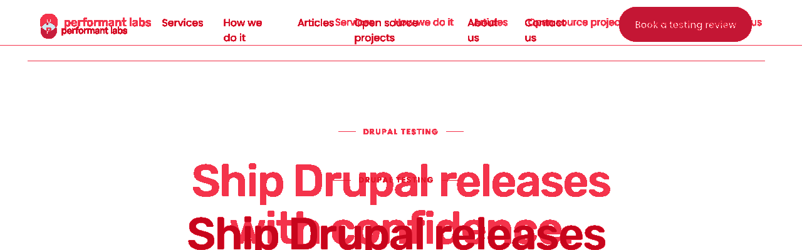
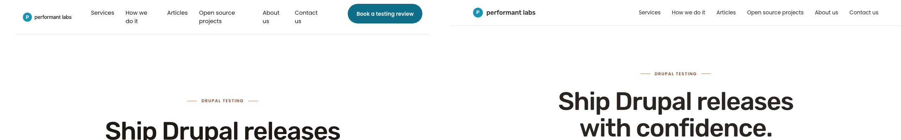

What I see different
- 1280: Live has a teal "Book a testing review" pill on the right; preview has nothing on the right.
- 1280: Live nav labels "How we do it" and "Open source projects" wrap to two lines (the pill steals horizontal space). Preview renders every label on one line.
- 1280 / 768 / 375: Live header band is roughly 25 px taller than preview (live ~82–98 px vs preview ~73 px). The hero eyebrow + H1 sit lower on live as a consequence.
- 768 / 375: Live shows a hamburger icon on the right; preview shows nothing on the right. Below 992 px, preview offers no nav affordance at all.
- Wordmark style and "performant labs" text match across live and preview at every viewport (no P-badge-only state).
- Nav order and labels at >=992 px match exactly: Services, How we do it, Articles, Open source projects, About us, Contact us.
1280 × 400 — header band
Wipe comparator
LivePreview



ImageMagick AE diff — red regions = differing pixels (61,345 px · 11.98%)

Side-by-side composite (live left, preview right)
768 × 400 — header band
Wipe comparator
LivePreview
ImageMagick AE diff (44,646 px · 14.53%)
Side-by-side composite (live left, preview right)
375 × 400 — header band
Wipe comparator
LivePreview
ImageMagick AE diff (24,333 px · 16.22%)
Side-by-side composite (live left, preview right)
Per-viewport delta table
| Viewport | Pixels different | Delta % | Live header height | Preview header height | Primary delta in plain English |
|---|---|---|---|---|---|
| 1280 × 400 | 61,345 | 11.98% | 98 px | 73 px | Live has the teal "Book a testing review" pill on the right, forcing two nav labels to wrap to two lines. Preview has no CTA and renders every label on one line. |
| 768 × 400 | 44,646 | 14.53% | 82 px | 73 px | Live shows wordmark + hamburger. Preview shows wordmark only and no nav affordance below 992 px. |
| 375 × 400 | 24,333 | 16.22% | 82 px | 73 px | Same pattern as 768 — wordmark + hamburger on live, wordmark only on preview. |
Recommended scope for sub-cycle 8.1
- Remove the "Book a testing review" CTA pill from the live header at all viewports, including its markup and any associated
.site-header__ctarule. Once removed, the desktop nav labels should fit on one line, matching preview. - Reduce live header vertical padding so the band measures ~73 px (preview), not 82–98 px. Likely a padding or row-height adjustment on
.site-header. - Decide tablet/mobile nav strategy (operator call): add a hamburger to the preview (parity toward live) OR remove the hamburger from live and accept preview's "no nav under 992 px" behaviour. Both are valid; F cannot complete 8.1 until this is decided.
- Verify nav order, labels, and 992 px
display: nonebreakpoint after the above changes — these already match today, so this is a regression check, not new work.
Out of scope: wordmark, hero, logo grid, hero-to-logo transition (already landed in 8.2/8.4/8.5).
Outstanding questions for the operator
- Mobile / tablet nav affordance: should the preview gain a hamburger to match live, or should live drop the hamburger to match preview's "hide nav under 992 px" behaviour? This is the binding decision before F starts.
- Header height target: confirm 73 px (preview) is the intended target for live, vs live's current 82–98 px. Earlier audits referenced ~50 px and ~80 px; current measurements above are the source of truth.